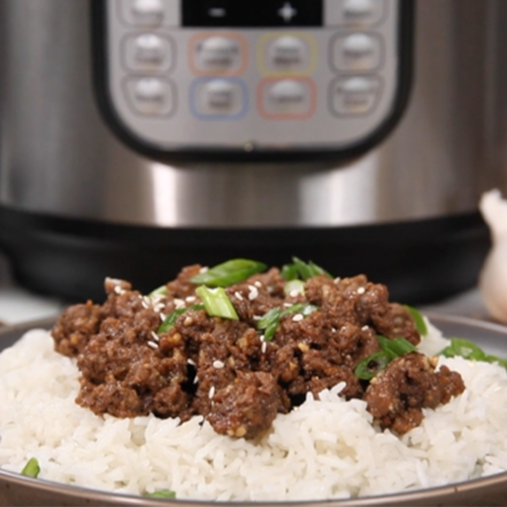

Savory Korean Beef & Rice

1 lbground beef6garlic cloves, minced⅓ cupsoy sauce⅓ cupwater¼ cupbrown sugar1 tbspginger root grated1 tbsptoasted sesame oil½ tspwhite pepper¼ tspcayenne - to taste- Sliced green onions and sesame seeds for garnish
Start rice in rice cooker as normal.
Add ground beef to the Instant Pot. Using the display panel select the SAUTE function. This can also be done over the stove top.
Brown the meat until no pink remains, breaking up as you go. Drain any liquids.
Add remaining Beef Mixture ingredients and stir to combine.
Turn the pot off by selecting CANCEL, then secure the lid, making sure the vent is closed.
Using the display panel select the MANUAL or PRESSURE COOK function*. Use the +/- keys and program the Instant Pot for 8 minutes.
When the time is up, let the pressure naturally release for 10 minutes, then quick-release the remaining pressure.
Carefully remove the casserole from the pot.
Remove the riser and stir the beef mixture. Serve beef over rice garnished with green onions and sesame seeds.